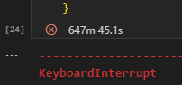

Satisfacción de clientes#
import warnings
warnings.filterwarnings('ignore')
import os
import joblib
import pandas as pd
import numpy as np
import seaborn as sns
import matplotlib.pyplot as plt
from sklearn.pipeline import Pipeline
from sklearn.preprocessing import StandardScaler
from sklearn.model_selection import train_test_split, StratifiedKFold, GridSearchCV
from sklearn.metrics import precision_score, recall_score, f1_score, roc_auc_score, roc_curve, confusion_matrix, accuracy_score, auc
from sklearn.metrics import confusion_matrix, ConfusionMatrixDisplay
from imblearn.over_sampling import ADASYN
from sklearn.naive_bayes import GaussianNB
from sklearn.neighbors import KNeighborsClassifier
from sklearn.linear_model import LogisticRegression
from sklearn.ensemble import RandomForestClassifier
from xgboost import XGBClassifier
from sklearn.svm import SVC
dfSatisfaccionTrain = pd.read_csv("train.csv")
dfSatisfaccionTest = pd.read_csv('test.csv')
1. EDA#
dfSatisfaccionTrain.head()
| ID | var3 | var15 | imp_ent_var16_ult1 | imp_op_var39_comer_ult1 | imp_op_var39_comer_ult3 | imp_op_var40_comer_ult1 | imp_op_var40_comer_ult3 | imp_op_var40_efect_ult1 | imp_op_var40_efect_ult3 | ... | saldo_medio_var33_hace2 | saldo_medio_var33_hace3 | saldo_medio_var33_ult1 | saldo_medio_var33_ult3 | saldo_medio_var44_hace2 | saldo_medio_var44_hace3 | saldo_medio_var44_ult1 | saldo_medio_var44_ult3 | var38 | TARGET | |
|---|---|---|---|---|---|---|---|---|---|---|---|---|---|---|---|---|---|---|---|---|---|
| 0 | 1 | 2 | 23 | 0.0 | 0.0 | 0.0 | 0.0 | 0.0 | 0.0 | 0.0 | ... | 0.0 | 0.0 | 0.0 | 0.0 | 0.0 | 0.0 | 0.0 | 0.0 | 39205.170000 | 0 |
| 1 | 3 | 2 | 34 | 0.0 | 0.0 | 0.0 | 0.0 | 0.0 | 0.0 | 0.0 | ... | 0.0 | 0.0 | 0.0 | 0.0 | 0.0 | 0.0 | 0.0 | 0.0 | 49278.030000 | 0 |
| 2 | 4 | 2 | 23 | 0.0 | 0.0 | 0.0 | 0.0 | 0.0 | 0.0 | 0.0 | ... | 0.0 | 0.0 | 0.0 | 0.0 | 0.0 | 0.0 | 0.0 | 0.0 | 67333.770000 | 0 |
| 3 | 8 | 2 | 37 | 0.0 | 195.0 | 195.0 | 0.0 | 0.0 | 0.0 | 0.0 | ... | 0.0 | 0.0 | 0.0 | 0.0 | 0.0 | 0.0 | 0.0 | 0.0 | 64007.970000 | 0 |
| 4 | 10 | 2 | 39 | 0.0 | 0.0 | 0.0 | 0.0 | 0.0 | 0.0 | 0.0 | ... | 0.0 | 0.0 | 0.0 | 0.0 | 0.0 | 0.0 | 0.0 | 0.0 | 117310.979016 | 0 |
5 rows × 371 columns
dfSatisfaccionTrain.shape
(76020, 371)
numCat = dfSatisfaccionTrain.select_dtypes(include=['object', 'category', 'bool']).shape[1]
numNum = dfSatisfaccionTrain.select_dtypes(include=['number']).shape[1]
print(f"Columnas numéricas: {numNum}")
print(f"Columnas categóricas: {numCat}")
Columnas numéricas: 371
Columnas categóricas: 0
dfSatisfaccionTrain['TARGET'].value_counts()
TARGET
0 73012
1 3008
Name: count, dtype: int64
plt.figure(figsize=(8, 6))
sns.countplot(x='TARGET', data=dfSatisfaccionTrain, palette='Blues')
plt.title("Variables TARGET")
plt.xlabel("Satisfaccion")
plt.ylabel("Frecuencia")
plt.show()
tenemos el dataset de la satisfaccion de los clientes con 76020 registros las cuales tienen 371 columnas de variables, todas numericas incluyendo al final la columna TARGET la cual tiene los valores [0, 1] y es la que usaremos para las predicciones de satisfacción
1.1. analisis estadistico y valores faltantes#
dfSatisfaccionTrain.describe()
| ID | var3 | var15 | imp_ent_var16_ult1 | imp_op_var39_comer_ult1 | imp_op_var39_comer_ult3 | imp_op_var40_comer_ult1 | imp_op_var40_comer_ult3 | imp_op_var40_efect_ult1 | imp_op_var40_efect_ult3 | ... | saldo_medio_var33_hace2 | saldo_medio_var33_hace3 | saldo_medio_var33_ult1 | saldo_medio_var33_ult3 | saldo_medio_var44_hace2 | saldo_medio_var44_hace3 | saldo_medio_var44_ult1 | saldo_medio_var44_ult3 | var38 | TARGET | |
|---|---|---|---|---|---|---|---|---|---|---|---|---|---|---|---|---|---|---|---|---|---|
| count | 76020.000000 | 76020.000000 | 76020.000000 | 76020.000000 | 76020.000000 | 76020.000000 | 76020.000000 | 76020.000000 | 76020.000000 | 76020.000000 | ... | 76020.000000 | 76020.000000 | 76020.000000 | 76020.000000 | 76020.000000 | 76020.000000 | 76020.000000 | 76020.000000 | 7.602000e+04 | 76020.000000 |
| mean | 75964.050723 | -1523.199277 | 33.212865 | 86.208265 | 72.363067 | 119.529632 | 3.559130 | 6.472698 | 0.412946 | 0.567352 | ... | 7.935824 | 1.365146 | 12.215580 | 8.784074 | 31.505324 | 1.858575 | 76.026165 | 56.614351 | 1.172358e+05 | 0.039569 |
| std | 43781.947379 | 39033.462364 | 12.956486 | 1614.757313 | 339.315831 | 546.266294 | 93.155749 | 153.737066 | 30.604864 | 36.513513 | ... | 455.887218 | 113.959637 | 783.207399 | 538.439211 | 2013.125393 | 147.786584 | 4040.337842 | 2852.579397 | 1.826646e+05 | 0.194945 |
| min | 1.000000 | -999999.000000 | 5.000000 | 0.000000 | 0.000000 | 0.000000 | 0.000000 | 0.000000 | 0.000000 | 0.000000 | ... | 0.000000 | 0.000000 | 0.000000 | 0.000000 | 0.000000 | 0.000000 | 0.000000 | 0.000000 | 5.163750e+03 | 0.000000 |
| 25% | 38104.750000 | 2.000000 | 23.000000 | 0.000000 | 0.000000 | 0.000000 | 0.000000 | 0.000000 | 0.000000 | 0.000000 | ... | 0.000000 | 0.000000 | 0.000000 | 0.000000 | 0.000000 | 0.000000 | 0.000000 | 0.000000 | 6.787061e+04 | 0.000000 |
| 50% | 76043.000000 | 2.000000 | 28.000000 | 0.000000 | 0.000000 | 0.000000 | 0.000000 | 0.000000 | 0.000000 | 0.000000 | ... | 0.000000 | 0.000000 | 0.000000 | 0.000000 | 0.000000 | 0.000000 | 0.000000 | 0.000000 | 1.064092e+05 | 0.000000 |
| 75% | 113748.750000 | 2.000000 | 40.000000 | 0.000000 | 0.000000 | 0.000000 | 0.000000 | 0.000000 | 0.000000 | 0.000000 | ... | 0.000000 | 0.000000 | 0.000000 | 0.000000 | 0.000000 | 0.000000 | 0.000000 | 0.000000 | 1.187563e+05 | 0.000000 |
| max | 151838.000000 | 238.000000 | 105.000000 | 210000.000000 | 12888.030000 | 21024.810000 | 8237.820000 | 11073.570000 | 6600.000000 | 6600.000000 | ... | 50003.880000 | 20385.720000 | 138831.630000 | 91778.730000 | 438329.220000 | 24650.010000 | 681462.900000 | 397884.300000 | 2.203474e+07 | 1.000000 |
8 rows × 371 columns
sdt = dfSatisfaccionTrain.describe().iloc[2].sort_values(ascending=False)
sdt.head()
delta_num_aport_var13_1y3 6.959537e+08
delta_imp_aport_var13_1y3 6.959537e+08
delta_imp_compra_var44_1y3 3.033108e+08
delta_num_compra_var44_1y3 3.033108e+08
delta_imp_venta_var44_1y3 2.349869e+08
Name: std, dtype: float64
se puede observar como lo que mas sobresale es una desviación estandar en algunas variables los cuales se pueden relacionar con los cuartiles se observa que son ceros
faltantes = dfSatisfaccionTrain.isnull().sum().sort_values(ascending = False)
porcentajeFaltantes = faltantes / dfSatisfaccionTrain.shape[0]
dfFaltantes = pd.DataFrame({
'Num Faltantes': faltantes,
'Porcentaje': porcentajeFaltantes
}).reset_index()
print(f"valores unicos faltantes: {faltantes.unique()}")
print(f"valores unicos porcentajeFaltantes: {porcentajeFaltantes.unique()}")
dfFaltantes
valores unicos faltantes: [0]
valores unicos porcentajeFaltantes: [0.]
| index | Num Faltantes | Porcentaje | |
|---|---|---|---|
| 0 | ID | 0 | 0.0 |
| 1 | imp_trasp_var17_in_ult1 | 0 | 0.0 |
| 2 | ind_var7_emit_ult1 | 0 | 0.0 |
| 3 | imp_venta_var44_ult1 | 0 | 0.0 |
| 4 | imp_venta_var44_hace3 | 0 | 0.0 |
| ... | ... | ... | ... |
| 366 | num_op_var40_hace3 | 0 | 0.0 |
| 367 | num_op_var40_hace2 | 0 | 0.0 |
| 368 | num_var25 | 0 | 0.0 |
| 369 | num_var25_0 | 0 | 0.0 |
| 370 | TARGET | 0 | 0.0 |
371 rows × 3 columns
se puede observar que no hay datos faltantes en todas las columnas tanto de las variables como el TARGET
1.2. Analisis de las variables#
analisisVariables = dfSatisfaccionTrain.drop(columns=["ID","TARGET"]).copy()
para esto descartamos las columnas ID y TARGET ya que no hace falta para el anaisis de variables
solofloat = analisisVariables.select_dtypes(include=['float64'])
num = 20
variablesrandom = solofloat.sample(n=num, axis=1, random_state=8)
1.3. analisis de graficas#
variablesrandom.describe()
| saldo_var33 | saldo_medio_var29_ult1 | imp_compra_var44_hace3 | imp_aport_var17_ult1 | saldo_var26 | imp_op_var39_comer_ult1 | saldo_medio_var12_hace2 | imp_trasp_var33_in_ult1 | saldo_medio_var17_hace2 | saldo_var1 | saldo_var25 | saldo_medio_var29_hace3 | imp_op_var41_ult1 | saldo_medio_var13_corto_ult3 | saldo_medio_var17_ult1 | imp_ent_var16_ult1 | saldo_var31 | saldo_medio_var8_hace3 | delta_imp_aport_var13_1y3 | saldo_medio_var5_hace2 | |
|---|---|---|---|---|---|---|---|---|---|---|---|---|---|---|---|---|---|---|---|---|
| count | 76020.000000 | 76020.000000 | 76020.000000 | 76020.000000 | 76020.000000 | 76020.000000 | 7.602000e+04 | 76020.000000 | 7.602000e+04 | 7.602000e+04 | 76020.000000 | 76020.000000 | 76020.000000 | 76020.000000 | 7.602000e+04 | 76020.000000 | 7.602000e+04 | 76020.000000 | 7.602000e+04 | 76020.000000 |
| mean | 12.532333 | 0.253907 | 13.964581 | 31.105323 | 76.081633 | 72.363067 | 3.997023e+03 | 0.314701 | 9.117181e+01 | 4.844911e+01 | 72.735693 | 0.001910 | 137.242763 | 3857.848542 | 1.310316e+02 | 86.208265 | 2.922910e+02 | 9.505287 | 4.867140e+07 | 1579.135311 |
| std | 797.839557 | 52.078775 | 1151.510862 | 2457.091282 | 739.776626 | 339.315831 | 3.777314e+04 | 53.408085 | 1.539248e+04 | 1.093747e+04 | 726.882669 | 0.526626 | 697.712596 | 25572.245055 | 1.495653e+04 | 1614.757313 | 2.331640e+04 | 519.389157 | 6.959537e+08 | 12148.452398 |
| min | 0.000000 | 0.000000 | 0.000000 | 0.000000 | 0.000000 | 0.000000 | 0.000000e+00 | 0.000000 | -3.000000e-02 | -9.000000e-01 | 0.000000 | 0.000000 | 0.000000 | 0.000000 | 0.000000e+00 | 0.000000 | 0.000000e+00 | 0.000000 | -1.000000e+00 | -128.370000 |
| 25% | 0.000000 | 0.000000 | 0.000000 | 0.000000 | 0.000000 | 0.000000 | 0.000000e+00 | 0.000000 | 0.000000e+00 | 0.000000e+00 | 0.000000 | 0.000000 | 0.000000 | 0.000000 | 0.000000e+00 | 0.000000 | 0.000000e+00 | 0.000000 | 0.000000e+00 | 0.000000 |
| 50% | 0.000000 | 0.000000 | 0.000000 | 0.000000 | 0.000000 | 0.000000 | 0.000000e+00 | 0.000000 | 0.000000e+00 | 0.000000e+00 | 0.000000 | 0.000000 | 0.000000 | 0.000000 | 0.000000e+00 | 0.000000 | 0.000000e+00 | 0.000000 | 0.000000e+00 | 3.000000 |
| 75% | 0.000000 | 0.000000 | 0.000000 | 0.000000 | 0.000000 | 0.000000 | 0.000000e+00 | 0.000000 | 0.000000e+00 | 0.000000e+00 | 0.000000 | 0.000000 | 0.000000 | 0.000000 | 0.000000e+00 | 0.000000 | 0.000000e+00 | 0.000000 | 0.000000e+00 | 90.000000 |
| max | 142078.800000 | 13793.670000 | 210001.350000 | 432457.320000 | 69756.720000 | 12888.030000 | 3.000538e+06 | 13207.320000 | 4.210084e+06 | 3.000000e+06 | 69756.720000 | 145.200000 | 47598.090000 | 450000.000000 | 3.998687e+06 | 210000.000000 | 6.119500e+06 | 77586.210000 | 1.000000e+10 | 812137.260000 |
mean_values = variablesrandom.mean()
std_values_main = mean_values.drop('delta_imp_aport_var13_1y3')
fig, (ax1, ax2) = plt.subplots(1, 2, figsize=(16, 8))
sns.barplot(x=std_values_main.index, y=std_values_main.values, ax=ax1)
ax1.set_title('Media por columna (sin "delta_imp_aport_var13_1y3")')
ax1.set_xlabel('Columnas')
ax1.set_ylabel('Media')
ax1.tick_params(axis='x', rotation=90)
for i, v in enumerate(std_values_main.values):
ax1.text(i, v + 0.01, f'{v:.1f}', ha='center', va='bottom')
sns.barplot(x=['delta_imp_aport_var13_1y3'], y=[mean_values['delta_imp_aport_var13_1y3']], ax=ax2)
ax2.set_title('Media de "delta_imp_aport_var13_1y3"')
ax2.set_xlabel('Columna')
ax2.set_ylabel('Media')
ax2.text(0, mean_values['delta_imp_aport_var13_1y3'] + 0.01, f'{mean_values["delta_imp_aport_var13_1y3"]:.1f}',
ha='center', va='bottom')
plt.tight_layout()
plt.show()
std_values = variablesrandom.std()
std_values_main = std_values.drop('delta_imp_aport_var13_1y3')
fig, (ax1, ax2) = plt.subplots(1, 2, figsize=(16, 8))
sns.barplot(x=std_values_main.index, y=std_values_main.values, ax=ax1)
ax1.set_title('Desviación estándar por columna (sin "delta_imp_aport_var13_1y3")')
ax1.set_xlabel('Columnas')
ax1.set_ylabel('Desviación estándar')
ax1.tick_params(axis='x', rotation=90)
for i, v in enumerate(std_values_main.values):
ax1.text(i, v + 0.01, f'{v:.1f}', ha='center', va='bottom')
sns.barplot(x=['delta_imp_aport_var13_1y3'], y=[std_values['delta_imp_aport_var13_1y3']], ax=ax2)
ax2.set_title('Desviación estándar de "delta_imp_aport_var13_1y3"')
ax2.set_xlabel('Columna')
ax2.set_ylabel('Desviación estándar')
ax2.text(0, std_values['delta_imp_aport_var13_1y3'] + 0.01, f'{std_values["delta_imp_aport_var13_1y3"]:.1f}',
ha='center', va='bottom')
plt.tight_layout()
plt.show()
en estos graficas podemos ver visualmente las desviaciones estandar y las medias de las variables seleccionadas la cuales podemos observar que en los dos casos tanto mean como std varian una con respecto del otro y teniendo que colocar la variable delta_imp_aport_var13_1y3 en una grafica aparte del resto por temas de escala ya que supera por varios ordenes de magnitud a demás
# Suponiendo que `variablesrandom` es tu DataFrame
cols = variablesrandom.columns
plt.figure(figsize=(20, 16))
for i, var in enumerate(cols, 1):
plt.subplot(5, 4, i)
# Histograma con matplotlib
plt.hist(variablesrandom[var].dropna(), bins=30, color='blue', alpha=0.7, edgecolor='black')
plt.title(var)
plt.xlabel('') # Opcional: dejar vacío
plt.ylabel('') # Opcional: dejar vacío
plt.tight_layout()
plt.show()
en las graficas anteriores vemos las distribuciones de las 20 variables seleccionadas y estas parecen tender a parecerse con la mayoria de los valores cercanos a cero sin mostar indicios claros de alguna distribucion
plt.figure(figsize=(20, 16))
for i, var in enumerate(cols, 1):
plt.subplot(5, 4, i)
sns.boxplot(variablesrandom[var], palette='Blues', legend=False)
plt.title(var)
plt.xlabel('')
plt.ylabel('')
plt.show()
Observando los diagramas nuevamente observamos como las cajas no se logran ver a simple vista y que las apuntan cercano a un valor dandose ver que la mayoria de las graficas presentan datos atípicos
1.4. Analisis bivariado y reduccion de dimensionalidad#
matrizCorrelacion = analisisVariables.corr()
matrizCorrelacion
---------------------------------------------------------------------------
KeyboardInterrupt Traceback (most recent call last)
~\AppData\Local\Temp\ipykernel_16848\1198880664.py in ?()
----> 1 matrizCorrelacion = analisisVariables.corr()
2 matrizCorrelacion
~\AppData\Local\Programs\Python\Python312\Lib\site-packages\pandas\core\frame.py in ?(self, method, min_periods, numeric_only)
11035 idx = cols.copy()
11036 mat = data.to_numpy(dtype=float, na_value=np.nan, copy=False)
11037
11038 if method == "pearson":
> 11039 correl = libalgos.nancorr(mat, minp=min_periods)
11040 elif method == "spearman":
11041 correl = libalgos.nancorr_spearman(mat, minp=min_periods)
11042 elif method == "kendall" or callable(method):
KeyboardInterrupt:
matrizCorrelacionSelecs = variablesrandom.corr()
plt.figure(figsize=(14, 8))
sns.heatmap(matrizCorrelacionSelecs, annot=True, cmap='Blues', fmt='.2f')
plt.title('Matriz de Correlación')
plt.show()
de las 20 variables aleatorias elegidas podemos ver que en algunas si existen varias variables que pueden relacionarse y tenemos que tomar acciones
Para manejar la alta colinealidad entre las columnas, utilizaremos la matriz de correlación para identificar y eliminar variables altamente correlacionadas, estableciendo una tolerancia del 80%. Este enfoque es más eficiente que calcular el VIF, ya que evita el alto costo computacional de ajustar múltiples variables, simplificando el modelo sin comprometer la calidad del análisis.
CorrMat = analisisVariables.corr().abs()
diagonalSup = CorrMat.where(np.triu(np.ones(CorrMat.shape), k=1).astype(bool))
threshold = 0.8
dropCols = [column for column in diagonalSup.columns if any(diagonalSup[column] > threshold)]
print(f"Columnas descartadas: {dropCols}")
dfResultante = analisisVariables.drop(columns = dropCols)
print(f"columnas guardadas: {dfResultante.shape[1]}")
Columnas descartadas: ['imp_op_var39_comer_ult3', 'imp_op_var40_comer_ult3', 'imp_op_var40_efect_ult3', 'imp_op_var41_comer_ult1', 'imp_op_var41_comer_ult3', 'imp_op_var41_efect_ult3', 'imp_op_var41_ult1', 'imp_op_var39_efect_ult1', 'imp_op_var39_efect_ult3', 'imp_op_var39_ult1', 'ind_var8_0', 'ind_var8', 'ind_var12', 'ind_var13_corto_0', 'ind_var13_corto', 'ind_var13_largo', 'ind_var13_medio', 'ind_var13', 'ind_var17', 'ind_var18', 'ind_var20', 'ind_var24_0', 'ind_var24', 'ind_var26_0', 'ind_var26_cte', 'ind_var26', 'ind_var25_0', 'ind_var25', 'ind_var29_0', 'ind_var29', 'ind_var30', 'ind_var31', 'ind_var32_0', 'ind_var32', 'ind_var33', 'ind_var34', 'ind_var37_0', 'ind_var37', 'ind_var40_0', 'ind_var40', 'ind_var41_0', 'ind_var39', 'ind_var44', 'num_var1_0', 'num_var1', 'num_var5_0', 'num_var5', 'num_var6_0', 'num_var6', 'num_var8_0', 'num_var8', 'num_var12_0', 'num_var12', 'num_var13_0', 'num_var13_corto_0', 'num_var13_corto', 'num_var13_largo_0', 'num_var13_largo', 'num_var13_medio_0', 'num_var13_medio', 'num_var13', 'num_var14', 'num_var17', 'num_var18_0', 'num_var18', 'num_var20_0', 'num_var20', 'num_var24_0', 'num_var24', 'num_var26_0', 'num_var26', 'num_var25_0', 'num_var25', 'num_op_var40_ult3', 'num_op_var41_ult3', 'num_op_var39_hace2', 'num_op_var39_hace3', 'num_op_var39_ult1', 'num_op_var39_ult3', 'num_var29_0', 'num_var29', 'num_var30', 'num_var31_0', 'num_var31', 'num_var32_0', 'num_var32', 'num_var33_0', 'num_var33', 'num_var34_0', 'num_var34', 'num_var35', 'num_var37_0', 'num_var37', 'num_var39_0', 'num_var40_0', 'num_var40', 'num_var41_0', 'num_var39', 'num_var42_0', 'num_var42', 'num_var44_0', 'num_var44', 'saldo_var6', 'saldo_var13_medio', 'saldo_var13', 'saldo_var18', 'saldo_var24', 'saldo_var25', 'saldo_var29', 'saldo_var31', 'saldo_var32', 'saldo_var34', 'saldo_var40', 'saldo_var42', 'delta_imp_amort_var18_1y3', 'delta_imp_amort_var34_1y3', 'delta_num_aport_var13_1y3', 'delta_num_aport_var17_1y3', 'delta_num_aport_var33_1y3', 'delta_num_compra_var44_1y3', 'delta_num_reemb_var13_1y3', 'delta_num_reemb_var17_1y3', 'delta_num_reemb_var33_1y3', 'delta_num_trasp_var17_in_1y3', 'delta_num_trasp_var17_out_1y3', 'delta_num_trasp_var33_in_1y3', 'delta_num_trasp_var33_out_1y3', 'delta_num_venta_var44_1y3', 'imp_amort_var18_ult1', 'imp_amort_var34_ult1', 'imp_aport_var17_hace3', 'imp_reemb_var33_ult1', 'imp_trasp_var33_out_ult1', 'imp_venta_var44_ult1', 'ind_var10_ult1', 'ind_var10cte_ult1', 'ind_var9_cte_ult1', 'ind_var9_ult1', 'num_aport_var13_ult1', 'num_aport_var33_ult1', 'num_var7_emit_ult1', 'num_var7_recib_ult1', 'num_med_var22_ult3', 'num_meses_var5_ult3', 'num_meses_var8_ult3', 'num_meses_var12_ult3', 'num_meses_var13_corto_ult3', 'num_meses_var13_largo_ult3', 'num_meses_var13_medio_ult3', 'num_meses_var17_ult3', 'num_meses_var33_ult3', 'num_meses_var39_vig_ult3', 'num_meses_var44_ult3', 'num_op_var39_comer_ult1', 'num_op_var39_comer_ult3', 'num_op_var40_comer_ult3', 'num_op_var40_efect_ult1', 'num_op_var40_efect_ult3', 'num_op_var41_comer_ult1', 'num_op_var41_comer_ult3', 'num_op_var41_efect_ult3', 'num_op_var39_efect_ult1', 'num_op_var39_efect_ult3', 'num_reemb_var13_ult1', 'num_reemb_var17_hace3', 'num_reemb_var33_ult1', 'num_trasp_var17_in_hace3', 'num_trasp_var17_in_ult1', 'num_trasp_var17_out_ult1', 'num_trasp_var33_in_hace3', 'num_trasp_var33_in_ult1', 'num_trasp_var33_out_ult1', 'num_venta_var44_hace3', 'num_venta_var44_ult1', 'num_var45_hace2', 'num_var45_ult1', 'num_var45_ult3', 'saldo_medio_var5_ult1', 'saldo_medio_var5_ult3', 'saldo_medio_var8_ult1', 'saldo_medio_var8_ult3', 'saldo_medio_var12_hace2', 'saldo_medio_var12_ult1', 'saldo_medio_var12_ult3', 'saldo_medio_var13_corto_hace2', 'saldo_medio_var13_corto_ult1', 'saldo_medio_var13_corto_ult3', 'saldo_medio_var13_largo_ult1', 'saldo_medio_var13_largo_ult3', 'saldo_medio_var13_medio_hace2', 'saldo_medio_var13_medio_ult1', 'saldo_medio_var13_medio_ult3', 'saldo_medio_var17_hace2', 'saldo_medio_var17_hace3', 'saldo_medio_var17_ult1', 'saldo_medio_var17_ult3', 'saldo_medio_var29_ult1', 'saldo_medio_var29_ult3', 'saldo_medio_var33_hace2', 'saldo_medio_var33_ult1', 'saldo_medio_var33_ult3', 'saldo_medio_var44_ult1', 'saldo_medio_var44_ult3']
columnas guardadas: 166
despues de realizar el proceso de reduccion de dimensionalidad reducimos el tamaño del dataset casi a la mitad (55,01%) pasando de 369 (excluyendo ID y TARGET) a 166 columnas lo cual ayudará a reducir el coste significativamente
dfResultante['TARGET'] = dfSatisfaccionTrain['TARGET']
dfResultante.head()
| var3 | var15 | imp_ent_var16_ult1 | imp_op_var39_comer_ult1 | imp_op_var40_comer_ult1 | imp_op_var40_efect_ult1 | imp_op_var40_ult1 | imp_op_var41_efect_ult1 | imp_sal_var16_ult1 | ind_var1_0 | ... | saldo_medio_var13_largo_hace2 | saldo_medio_var13_largo_hace3 | saldo_medio_var13_medio_hace3 | saldo_medio_var29_hace2 | saldo_medio_var29_hace3 | saldo_medio_var33_hace3 | saldo_medio_var44_hace2 | saldo_medio_var44_hace3 | var38 | TARGET | |
|---|---|---|---|---|---|---|---|---|---|---|---|---|---|---|---|---|---|---|---|---|---|
| 0 | 2 | 23 | 0.0 | 0.0 | 0.0 | 0.0 | 0.0 | 0.0 | 0.0 | 0 | ... | 0.0 | 0.0 | 0 | 0.0 | 0.0 | 0.0 | 0.0 | 0.0 | 39205.170000 | 0 |
| 1 | 2 | 34 | 0.0 | 0.0 | 0.0 | 0.0 | 0.0 | 0.0 | 0.0 | 0 | ... | 0.0 | 0.0 | 0 | 0.0 | 0.0 | 0.0 | 0.0 | 0.0 | 49278.030000 | 0 |
| 2 | 2 | 23 | 0.0 | 0.0 | 0.0 | 0.0 | 0.0 | 0.0 | 0.0 | 0 | ... | 0.0 | 0.0 | 0 | 0.0 | 0.0 | 0.0 | 0.0 | 0.0 | 67333.770000 | 0 |
| 3 | 2 | 37 | 0.0 | 195.0 | 0.0 | 0.0 | 0.0 | 0.0 | 0.0 | 0 | ... | 0.0 | 0.0 | 0 | 0.0 | 0.0 | 0.0 | 0.0 | 0.0 | 64007.970000 | 0 |
| 4 | 2 | 39 | 0.0 | 0.0 | 0.0 | 0.0 | 0.0 | 0.0 | 0.0 | 0 | ... | 0.0 | 0.0 | 0 | 0.0 | 0.0 | 0.0 | 0.0 | 0.0 | 117310.979016 | 0 |
5 rows × 167 columns
procedemos a descartar las columnas del dataframe de test para tenerlo con las mismas columnas
dfResultanteTest = dfSatisfaccionTest.drop(columns=dropCols).drop(columns='ID')
dfResultanteTest.head()
| var3 | var15 | imp_ent_var16_ult1 | imp_op_var39_comer_ult1 | imp_op_var40_comer_ult1 | imp_op_var40_efect_ult1 | imp_op_var40_ult1 | imp_op_var41_efect_ult1 | imp_sal_var16_ult1 | ind_var1_0 | ... | saldo_medio_var13_corto_hace3 | saldo_medio_var13_largo_hace2 | saldo_medio_var13_largo_hace3 | saldo_medio_var13_medio_hace3 | saldo_medio_var29_hace2 | saldo_medio_var29_hace3 | saldo_medio_var33_hace3 | saldo_medio_var44_hace2 | saldo_medio_var44_hace3 | var38 | |
|---|---|---|---|---|---|---|---|---|---|---|---|---|---|---|---|---|---|---|---|---|---|
| 0 | 2 | 32 | 0.0 | 0.0 | 0.0 | 0.0 | 0.0 | 0.0 | 0.0 | 0 | ... | 0.0 | 0.0 | 0.0 | 0 | 0.0 | 0 | 0.0 | 0.0 | 0.0 | 40532.10 |
| 1 | 2 | 35 | 0.0 | 0.0 | 0.0 | 0.0 | 0.0 | 0.0 | 0.0 | 0 | ... | 0.0 | 0.0 | 0.0 | 0 | 0.0 | 0 | 0.0 | 0.0 | 0.0 | 45486.72 |
| 2 | 2 | 23 | 0.0 | 0.0 | 0.0 | 0.0 | 0.0 | 60.0 | 0.0 | 0 | ... | 0.0 | 0.0 | 0.0 | 0 | 0.0 | 0 | 0.0 | 0.0 | 0.0 | 46993.95 |
| 3 | 2 | 24 | 0.0 | 0.0 | 0.0 | 0.0 | 0.0 | 0.0 | 0.0 | 0 | ... | 0.0 | 0.0 | 0.0 | 0 | 0.0 | 0 | 0.0 | 0.0 | 0.0 | 187898.61 |
| 4 | 2 | 23 | 0.0 | 0.0 | 0.0 | 0.0 | 0.0 | 0.0 | 0.0 | 0 | ... | 0.0 | 0.0 | 0.0 | 0 | 0.0 | 0 | 0.0 | 0.0 | 0.0 | 73649.73 |
5 rows × 166 columns
confirmamos que los datasets de train y test tienen las mismas variables siendo TARGET la que está de más en el de train y procedemos a guardarlos en un nuevo archivo CSV
dfResultante.to_csv('TrainFormateado.csv', index=False)
dfResultanteTest.to_csv('TestFormateado.csv', index=False)
2. Modelos de clasificación#
TrainFormateado = pd.read_csv("TrainFormateado.csv")
dfTablaResultados = pd.DataFrame(columns=['Modelo' ,'precission' ,'recall' ,'accuracy' ,'f1-score' ,'AUC'])
2.1. separacion de TRAIN y TEST#
TrainFormateado.head()
| var3 | var15 | imp_ent_var16_ult1 | imp_op_var39_comer_ult1 | imp_op_var40_comer_ult1 | imp_op_var40_efect_ult1 | imp_op_var40_ult1 | imp_op_var41_efect_ult1 | imp_sal_var16_ult1 | ind_var1_0 | ... | saldo_medio_var13_largo_hace2 | saldo_medio_var13_largo_hace3 | saldo_medio_var13_medio_hace3 | saldo_medio_var29_hace2 | saldo_medio_var29_hace3 | saldo_medio_var33_hace3 | saldo_medio_var44_hace2 | saldo_medio_var44_hace3 | var38 | TARGET | |
|---|---|---|---|---|---|---|---|---|---|---|---|---|---|---|---|---|---|---|---|---|---|
| 0 | 2 | 23 | 0.0 | 0.0 | 0.0 | 0.0 | 0.0 | 0.0 | 0.0 | 0 | ... | 0.0 | 0.0 | 0 | 0.0 | 0.0 | 0.0 | 0.0 | 0.0 | 39205.170000 | 0 |
| 1 | 2 | 34 | 0.0 | 0.0 | 0.0 | 0.0 | 0.0 | 0.0 | 0.0 | 0 | ... | 0.0 | 0.0 | 0 | 0.0 | 0.0 | 0.0 | 0.0 | 0.0 | 49278.030000 | 0 |
| 2 | 2 | 23 | 0.0 | 0.0 | 0.0 | 0.0 | 0.0 | 0.0 | 0.0 | 0 | ... | 0.0 | 0.0 | 0 | 0.0 | 0.0 | 0.0 | 0.0 | 0.0 | 67333.770000 | 0 |
| 3 | 2 | 37 | 0.0 | 195.0 | 0.0 | 0.0 | 0.0 | 0.0 | 0.0 | 0 | ... | 0.0 | 0.0 | 0 | 0.0 | 0.0 | 0.0 | 0.0 | 0.0 | 64007.970000 | 0 |
| 4 | 2 | 39 | 0.0 | 0.0 | 0.0 | 0.0 | 0.0 | 0.0 | 0.0 | 0 | ... | 0.0 | 0.0 | 0 | 0.0 | 0.0 | 0.0 | 0.0 | 0.0 | 117310.979016 | 0 |
5 rows × 167 columns
plt.figure(figsize=(8, 6))
sns.countplot(x='TARGET', data=TrainFormateado, palette='Blues')
plt.title("Variables TARGET")
plt.xlabel("Satisfaccion")
plt.ylabel("Frecuencia")
plt.show()
tenemos las clases desvalanceadas lo cual usaremos ADASYN para que se ajuste automaticamente y balancee el cojunto de test generando datos simulados
X = TrainFormateado.drop(columns=['TARGET'])
y = TrainFormateado['TARGET']
X_train, X_test, y_train, y_test = train_test_split(X, y, test_size=0.2, random_state=21)
adasyn_train = ADASYN(random_state = 10)
adasyn_test = ADASYN(random_state = 45)
X_train_res, y_train_res = adasyn_train.fit_resample(X_train, y_train)
X_test_res, y_test_res = adasyn_test.fit_resample(X_test,y_test)
2.2. Clasificación Bayesiana#
bayes_pipeline = Pipeline([('scaler', StandardScaler()), ('bayes', GaussianNB())])
bayes_paramgrid = {'bayes__var_smoothing': [10**1, 10**2, 10**3, 10**4 ]}
skf = StratifiedKFold(n_splits=5, shuffle=True, random_state=18)
bayes_gridsearch = GridSearchCV(bayes_pipeline, bayes_paramgrid, cv=skf, scoring='roc_auc', n_jobs=-1)
bayes_gridsearch.fit(X_train_res, y_train_res)
print("Mejor score train:", bayes_gridsearch.best_score_)
print("Mejor parámetro:", bayes_gridsearch.best_params_)
pedict_baye = bayes_gridsearch.predict(X_test_res)
predProb_baye = bayes_gridsearch.best_estimator_.predict_proba(X_test_res)[:, 1]
#añade registro tabla
dfTablaResultados.loc[len(dfTablaResultados)] ={
'Modelo': 'Clasificación Bayesiana',
'precission': precision_score(y_test_res, pedict_baye),
'recall': recall_score(y_test_res, pedict_baye),
'accuracy': accuracy_score(y_test_res, pedict_baye),
'f1-score': f1_score(y_test_res, pedict_baye),
'AUC': roc_auc_score(y_test_res, predProb_baye),
}
print("Mejor score train:", bayes_gridsearch.best_score_)
print("Mejor parámetro:", bayes_gridsearch.best_params_)
Mejor score train: 0.8003051410457687
Mejor parámetro: {'bayes__var_smoothing': 1000}
2.3. KNN#
knn_pipeline = Pipeline([('scaler', StandardScaler()), ('knn', KNeighborsClassifier())])
knn_paramgrid = {'knn__n_neighbors': list(range(6, 11)), 'knn__p': [1]}
skf = StratifiedKFold(n_splits=5, shuffle=True, random_state=18)
knn_gridsearch = GridSearchCV(knn_pipeline, knn_paramgrid, cv=skf, scoring='roc_auc', n_jobs=-1)
knn_gridsearch.fit(X_train_res, y_train_res)
print("Mejor score de entrenamiento:", knn_gridsearch.best_score_)
print("Mejor parámetro:", knn_gridsearch.best_params_)
pedict_knn = knn_gridsearch.predict(X_test_res)
predProb_knn = knn_gridsearch.best_estimator_.predict_proba(X_test_res)[:, 1]
#añade registro tabla
dfTablaResultados.loc[len(dfTablaResultados)] ={
'Modelo': 'KNN',
'precission': precision_score(y_test_res, pedict_knn),
'recall': recall_score(y_test_res, pedict_knn),
'accuracy': accuracy_score(y_test_res, pedict_knn),
'f1-score': f1_score(y_test_res, pedict_knn),
'AUC': roc_auc_score(y_test_res, predProb_knn),
}
print("Mejor score de entrenamiento:", knn_gridsearch.best_score_)
print("Mejor parámetro:", knn_gridsearch.best_params_)
Mejor score de entrenamiento: 0.9435836440931732
Mejor parámetro: {'knn__n_neighbors': 10, 'knn__p': 1}
2.4. L1/L2 Penalty Logistic Regression#
lr_pipeline = Pipeline([('scaler', StandardScaler()), ('lr', LogisticRegression(solver='saga', max_iter=50, random_state=18))])
lr_paramgrid = {'lr__penalty': ['l1', 'l2'], 'lr__C': [10**-1, 1, 10**2, 10**3, 10**4]}
skf = StratifiedKFold(n_splits=5, shuffle=True, random_state=18)
lr_gridsearch = GridSearchCV(estimator=lr_pipeline, param_grid=lr_paramgrid, scoring='roc_auc', cv=skf, n_jobs=-1)
lr_gridsearch.fit(X_train_res, y_train_res)
print("Mejor score de entrenamiento:", lr_gridsearch.best_score_)
print("Mejores parámetros:", lr_gridsearch.best_params_)
pedict_logr = lr_gridsearch.predict(X_test_res)
predProb_logr = lr_gridsearch.best_estimator_.predict_proba(X_test_res)[:, 1]
#añade registro tabla
dfTablaResultados.loc[len(dfTablaResultados)] ={
'Modelo': 'L1/L2 Penalty Logistic Regression',
'precission': precision_score(y_test_res, pedict_logr),
'recall': recall_score(y_test_res, pedict_logr),
'accuracy': accuracy_score(y_test_res, pedict_logr),
'f1-score': f1_score(y_test_res, pedict_logr),
'AUC': roc_auc_score(y_test_res, predProb_logr),
}
Mejor score de entrenamiento: 0.8721222197184586
Mejores parámetros: {'lr__C': 1000, 'lr__penalty': 'l2'}
2.5. Random Forest#
rf_pipeline= Pipeline([('rf', RandomForestClassifier(random_state=18))])
rf_paramgrid = {'rf__n_estimators': [500, 550, 600], 'rf__max_depth': [30, 35, 45 ]}
skf = StratifiedKFold(n_splits=5, shuffle=True, random_state=18)
rf_gridsearch = GridSearchCV(estimator=rf_pipeline, param_grid=rf_paramgrid,cv=skf, scoring='roc_auc', n_jobs=-1)
rf_gridsearch.fit(X_train_res, y_train_res)
print("Mejor score de entrenamiento:", rf_gridsearch.best_score_)
print("Mejor parámetro:", rf_gridsearch.best_params_)
pedict_randfo = rf_gridsearch.predict(X_test_res)
predProb_randfo = rf_gridsearch.best_estimator_.predict_proba(X_test_res)[:, 1]
#añade registro tabla
dfTablaResultados.loc[len(dfTablaResultados)] ={
'Modelo': 'Random Forest',
'precission': precision_score(y_test_res, pedict_randfo),
'recall': recall_score(y_test_res, pedict_randfo),
'accuracy': accuracy_score(y_test_res, pedict_randfo),
'f1-score': f1_score(y_test_res, pedict_randfo),
'AUC': roc_auc_score(y_test_res, predProb_randfo),
}
Mejor score de entrenamiento: 0.9850666070172002
Mejor parámetro: {'rf__max_depth': 35, 'rf__n_estimators': 550}
2.6. XGBoost#
xgb_pipeline = Pipeline([('xgb', XGBClassifier(use_label_encoder=False, eval_metric='logloss', random_state=18))])
xgb_paramgrid = {'xgb__max_depth': range(8, 12), 'xgb__n_estimators': [100, 150, 200], 'xgb__learning_rate': [0.1, 1, 10]}
skf = StratifiedKFold(n_splits=5, shuffle=True, random_state=18)
xgb_gridsearch = GridSearchCV(xgb_pipeline, param_grid=xgb_paramgrid, cv=skf, scoring='roc_auc', n_jobs=-1)
xgb_gridsearch.fit(X_train_res, y_train_res)
print("Mejor score de entrenamiento:", xgb_gridsearch.best_score_)
print("Mejor parámetro:", xgb_gridsearch.best_params_)
pedict_xgb = xgb_gridsearch.predict(X_test_res)
predProb_xgb = xgb_gridsearch.best_estimator_.predict_proba(X_test_res)[:, 1]
#añade registro tabla
dfTablaResultados.loc[len(dfTablaResultados)] ={
'Modelo': 'XGBoost',
'precission': precision_score(y_test_res, pedict_xgb),
'recall': recall_score(y_test_res, pedict_xgb),
'accuracy': accuracy_score(y_test_res, pedict_xgb),
'f1-score': f1_score(y_test_res, pedict_xgb),
'AUC': roc_auc_score(y_test_res, predProb_xgb),
}
Mejor score de entrenamiento: 0.9845058535518112
Mejor parámetro: {'xgb__learning_rate': 0.1, 'xgb__max_depth': 11, 'xgb__n_estimators': 200}
2.7. SVM#

para agilizar el entrenamiento de SVM en vez de recorrer los hiper parametros C:[1, 10, 100], kernel:[poly, rbf], gamma:[scale, auto] usaremos de una C:10, gamma:scale, kernel:poly
svm_pipeline = Pipeline([('scaler', StandardScaler()), ('svm', SVC(probability=True, random_state=18))])
#svm_paramgrid = {'svm__C': [10], 'svm__kernel': ['poly'], 'svm__gamma': ['scale']}
svm_paramgrid = {}
print("gridsearch...")
skf = StratifiedKFold(n_splits=5, shuffle=True, random_state=18)
svm_gridsearch = GridSearchCV(estimator=svm_pipeline, param_grid=svm_paramgrid, scoring='roc_auc', cv=skf, n_jobs=-1)
print("fit...")
svm_gridsearch.fit(X_train_res, y_train_res)
print("Mejor score de entrenamiento:", svm_gridsearch.best_score_)
print("Mejor parámetro:", svm_gridsearch.best_params_)
print("predict 1...")
pedict_svm = svm_gridsearch.predict(X_test_res)
print("predict 2...")
predProb_svm = svm_gridsearch.best_estimator_.predict_proba(X_test_res)[:, 1]
#añade registro tabla
dfTablaResultados.loc[len(dfTablaResultados)] ={
'Modelo': 'SVM',
'precission': precision_score(y_test_res, pedict_svm),
'recall': recall_score(y_test_res, pedict_svm),
'accuracy': accuracy_score(y_test_res, pedict_svm),
'f1-score': f1_score(y_test_res, pedict_svm),
'AUC': roc_auc_score(y_test_res, predProb_svm),
}
2.8. Conclusiones modelos#
dfTablaResultados
| Modelo | precission | recall | accuracy | f1-score | AUC | |
|---|---|---|---|---|---|---|
| 0 | Clasificación Bayesiana | 0.502779 | 1.000000 | 0.502982 | 0.669132 | 0.796743 |
| 1 | KNN | 0.889644 | 0.718956 | 0.813934 | 0.795244 | 0.894397 |
| 2 | L1/L2 Penalty Logistic Regression | 0.761319 | 0.834791 | 0.785439 | 0.796364 | 0.873012 |
| 3 | Random Forest | 0.924471 | 0.861648 | 0.895088 | 0.891955 | 0.955487 |
| 4 | XGBoost | 0.925861 | 0.893523 | 0.910529 | 0.909405 | 0.970093 |
teniendo en cuenta la metrica AUC concluimos que el modelo que major desempeño y mejor se ajustó fue el XGBoost con un valor de 0.97 y que su vez tambien fue mejor en las demás metricas exeptuando en recall ya que si bien no es la primera cuenta con un alto scrore
2.9. matrices de confusión#
models = {
"Clasificación Bayesiana": pedict_baye,
"KNN": pedict_knn,
"Regresión Logística": pedict_logr,
"Random Forest": pedict_randfo,
"XGBoost": pedict_xgb,
#"SVM": pedict_svm
}
estado = ["Satisfecho", "Insatisfecho"]
fig, axes = plt.subplots(2, 3, figsize=(15, 10))
axes = axes.flatten()
for i, (name, predictions) in enumerate(models.items()):
confMat = confusion_matrix(y_test_res, predictions)
disp = ConfusionMatrixDisplay(confusion_matrix=confMat, display_labels=estado)
disp.plot(ax=axes[i], cmap='Blues', colorbar=False)
axes[i].set_title(name)
axes[i].set_xlabel("Predicción")
axes[i].set_ylabel("Real")
plt.tight_layout()
plt.show()
2.10. curvas ROC#
modelsProb = {
"Clasificación Bayesiana": predProb_baye,
"KNN": predProb_knn,
"Regresión Logística": predProb_logr,
"Random Forest": predProb_randfo,
"XGBoost": predProb_xgb,
#"SVM": predProb_svm
}
fig, axes = plt.subplots(2, 3, figsize=(15, 10))
axes = axes.flatten()
for idx, (name, y_pred_proba) in enumerate(modelsProb.items()):
fpr, tpr, thresholds = roc_curve(y_test_res, y_pred_proba)
roc_auc = auc(fpr, tpr)
axes[idx].plot(fpr, tpr, label=f"AUC = {roc_auc:.2f}")
axes[idx].plot([0, 1], [0, 1], label="Random")
axes[idx].set_title(name)
axes[idx].set_xlabel("Falsos Positivos")
axes[idx].set_ylabel("Verdaderos Positivos")
axes[idx].legend(loc="lower right")
axes[idx].grid()
for idx in range(len(modelsProb), len(axes)):
fig.delaxes(axes[idx])
plt.tight_layout()
plt.show()
3. Predicciones#
cargamos el dataframe de test que al principio se guardó formateado cuando se descartaron las columnas que tenian alta colineadidad y procederemos a predecir con este testFormateado
TestFormateado = pd.read_csv("TestFormateado.csv")
TestFormateado.head()
| var3 | var15 | imp_ent_var16_ult1 | imp_op_var39_comer_ult1 | imp_op_var40_comer_ult1 | imp_op_var40_efect_ult1 | imp_op_var40_ult1 | imp_op_var41_efect_ult1 | imp_sal_var16_ult1 | ind_var1_0 | ... | saldo_medio_var13_corto_hace3 | saldo_medio_var13_largo_hace2 | saldo_medio_var13_largo_hace3 | saldo_medio_var13_medio_hace3 | saldo_medio_var29_hace2 | saldo_medio_var29_hace3 | saldo_medio_var33_hace3 | saldo_medio_var44_hace2 | saldo_medio_var44_hace3 | var38 | |
|---|---|---|---|---|---|---|---|---|---|---|---|---|---|---|---|---|---|---|---|---|---|
| 0 | 2 | 32 | 0.0 | 0.0 | 0.0 | 0.0 | 0.0 | 0.0 | 0.0 | 0 | ... | 0.0 | 0.0 | 0.0 | 0 | 0.0 | 0 | 0.0 | 0.0 | 0.0 | 40532.10 |
| 1 | 2 | 35 | 0.0 | 0.0 | 0.0 | 0.0 | 0.0 | 0.0 | 0.0 | 0 | ... | 0.0 | 0.0 | 0.0 | 0 | 0.0 | 0 | 0.0 | 0.0 | 0.0 | 45486.72 |
| 2 | 2 | 23 | 0.0 | 0.0 | 0.0 | 0.0 | 0.0 | 60.0 | 0.0 | 0 | ... | 0.0 | 0.0 | 0.0 | 0 | 0.0 | 0 | 0.0 | 0.0 | 0.0 | 46993.95 |
| 3 | 2 | 24 | 0.0 | 0.0 | 0.0 | 0.0 | 0.0 | 0.0 | 0.0 | 0 | ... | 0.0 | 0.0 | 0.0 | 0 | 0.0 | 0 | 0.0 | 0.0 | 0.0 | 187898.61 |
| 4 | 2 | 23 | 0.0 | 0.0 | 0.0 | 0.0 | 0.0 | 0.0 | 0.0 | 0 | ... | 0.0 | 0.0 | 0.0 | 0 | 0.0 | 0 | 0.0 | 0.0 | 0.0 | 73649.73 |
5 rows × 166 columns
usamos el modelo XGBoost con los hiperparametros learning_rate:0.1, max_depth:11, n_estimators:200
yPredichos = xgb_gridsearch.best_estimator_.predict(TestFormateado)
TestFormateado["TARGET"] = yPredichos
TestFormateado.to_csv("TestFormateadoPredicciones.csv", index=False)
plt.figure(figsize=(8, 6))
ax = sns.countplot(x='TARGET', data=TestFormateado, palette='Blues')
ax.set_xticklabels(estado)
plt.title("Variables TARGET")
plt.ylabel("Frecuencia")
for container in ax.containers:
ax.bar_label(container, fmt='%d', label_type='edge')
plt.show()
de los 75818 registros de clientes podemos ver que las predicciones guardan cierta proporción con los datos reales del TARGET de entrenamiento, predicciendo que tenemos 69388 clientes satisfechos y 6430 clientes insatisfechos